How a cereal crop builds a yield — and how the grower turns that yield into grain a buyer will pay for
Lecture 06 · 2 hours · University of Western Australia Presented by Gustavo Alckmin
What you'll be able to do by the end
Recall the growth stages of wheat and barley and read the Zadoks decimal scale in the field.
Explain why growth stage, not calendar date, governs the timing of herbicide, nitrogen, fungicide and PGR decisions.
Discuss G × E × M and its interactions on cereal phenology and yield.
Explain how cereals compensate for drought and nutrient stress at different stages — and where compensation runs out.
Argue why cereals are less risky than legumes or canola for growers in the drier parts of the grainbelt.
Describe the key wheat and barley quality characteristics and the agronomy that delivers them.
Why it matters
Two-thirds of the WA cropped area is cereal. Every input decision on that country is timed by a growth stage, and every dollar earned on it is set by a grain specification.
The shape of the next two hours
1Why cereals dominate. Reliability, markets, and the risk gradient that explains rotation geography across the belt. (~15 min)
2The cereal plant and its yield components. Architecture, and the multiplicative chain that lets you attribute a yield loss to a date. (~15 min)
☏Break — 10 minutes.
3Development and the Zadoks scale. Germination to ripening, and why every input is timed by stage. (~35 min)
4Yield formation. G × E × M, stress compensation, and water-use efficiency as the scoreboard. (~17 min)
5Grain quality and price. Wheat classification, protein, and the malting barley premium. (~22 min)
Part 1
Why Cereals Dominate the WA Grainbelt
Reliability, market depth, and the risk gradient that explains why rotations look different at Merredin than at Esperance.
Wheat and Barley: the Backbone of WA Cropping
Together they occupy the majority of the WA cropped area and generate most of the region's grain export income.
Adapted to the Mediterranean pattern — winter-growing, spring-finishing, matched to a cool wet season and a dry finish.
Establish reliably, even from a marginal or late break.
Tolerate poor, variable and constrained soils better than the alternatives.
Deep, liquid export markets with well-understood specifications.
Mature support system — agronomy, breeding, machinery and advice all built around them.
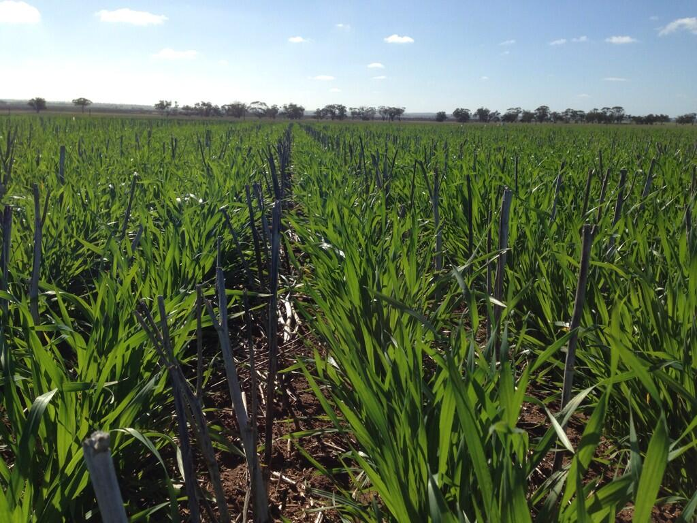
Two Crops, Complementary Roles
Wheat
The higher-value milling staple and the rotational anchor — the crop the system is built around.
Graded into protein-based quality classes that reward nitrogen management.
WA grows spring wheats: little or no vernalisation requirement, low photoperiod sensitivity, suited to a short season.
Slightly longer season and less salt-tolerant than barley.
Barley
Faster and more robust — often more drought- and salt-tolerant, and better suited to the tougher country.
Takes the later sowing slots when the break is late.
Two markets: a malting premium against exacting specifications, or feed with looser ones.
WA grows almost exclusively two-rowed spring barley.
Why Cereals Are Less Risky Than Break Crops
1Establishment reliability. Large seed, vigorous coleoptile, tolerant of a wide range of sowing conditions. Canola and pulses have small seed and narrower requirements, so a dry start is far more likely to cost the whole stand.
2Stress tolerance and compensation. Cereals tolerate drought, heat and nutrient stress better, and — crucially — compensate for early stress through tillering. Canola and pulses are much less forgiving.
3Market depth and price stability. Wheat and barley trade into large, liquid, well-understood markets. Pulse and even canola markets are thinner and more volatile.
4Agronomic maturity. Weed, disease and nutrition programs for cereals are well established, well supported and comparatively low-risk to execute.
The Risk Gradient Explains Rotation Geography
Across the WA grainbelt, rotation composition tracks rainfall — and therefore risk:
Low-rainfall, high-risk east (e.g. Merredin, Mullewa): growers lean heavily on cereals and use break crops sparingly and strategically. Rotations here optimise for maximum profit, not maximum diversity.
Higher-rainfall, lower-risk south and west (e.g. Esperance, Great Southern): the more valuable but riskier break crops — canola, lupins, pulses — can safely occupy a larger share.
The break crops still earn their place everywhere: disease and weed breaks, and nitrogen. Wheat after lupins shows Take-all incidence falling from about 54% to roughly 15–19%.
A grower at Merredin and a grower at Esperance both know that canola pays more than wheat. They plant different rotations anyway. What are they each optimising for — and what would have to change for them to swap?
Part 2
The Cereal Plant and Its Yield Components
The architecture that makes compensation possible, and the multiplicative chain that lets you attribute a yield loss to a date.
The Cereal Plant: Vegetative Architecture
A main stem plus tillers — side shoots from the crown, each one a potential head.
Stems are built of nodes and internodes; the swollen nodes you can feel through the sheath are how stem elongation is scored.
Each leaf has a blade, a sheath, and at their junction a ligule and auricles — the ligule is the marker for "fully emerged" when counting leaves.
The topmost leaf is the flag leaf; it and the ear supply most of the carbohydrate that fills the grain.
Below ground: seminal roots from the seed, then nodal roots from the crown once the crown establishes at a consistent depth.
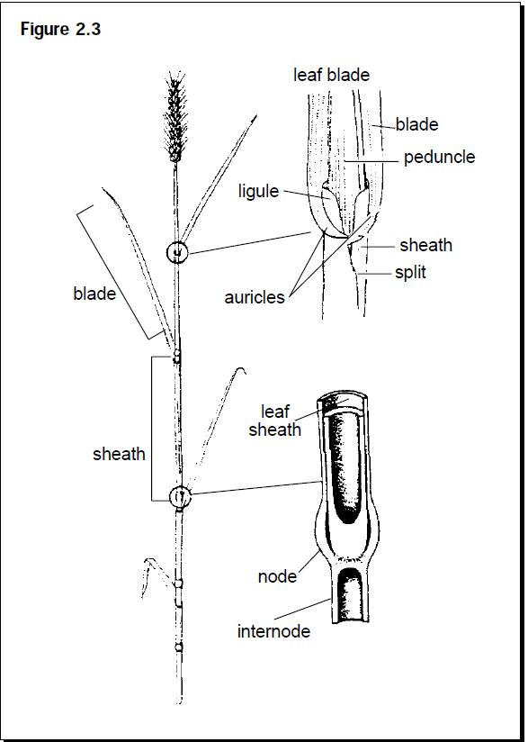
Source: DPIRD/GRDC Wheat Book: Principles and Practice, ch. 2
Where the Grain Actually Sits: Ear, Spikelet, Floret
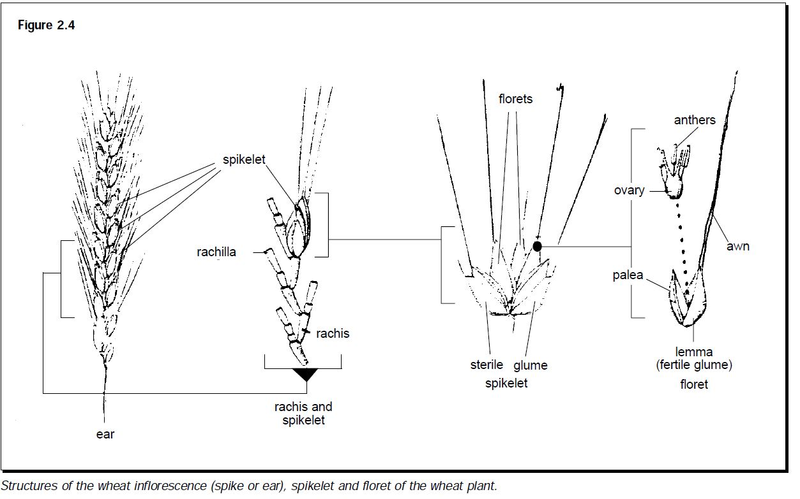
Wheat inflorescence: ear → spikelet (on the rachis) → floret (lemma, palea, anthers, ovary). Roughly 18–22 spikelets per head, 1–5 florets per spikelet, and typically 30–50 grains per head.
Source: DPIRD/GRDC Wheat Book: Principles and Practice, ch. 2
Yield Components: the Multiplicative Chain
1Plants per m² — set at establishment. Driven by seed rate, seedbed moisture, sowing depth, seed size and pests.
2× Heads per plant — set during tillering and tiller survival. Driven by nitrogen, moisture, light (density) and temperature.
3× Grains per head — set from stem elongation to flowering. Cut by frost, heat, water and nutrient stress.
4× Weight per grain — set during grain fill, by assimilate supply against the duration of filling. Typically 30–40 mg in a kind finish.
150 plants/m² × 3 heads × 30 grains × 35 mg ≈ 4.7 t/ha. Hold everything else and drop grains per head to 20, and the same crop makes 3.2 t/ha. The chain is multiplicative, so proportional losses compound — and each link is forged in a different fortnight.
The Components Are Set Sequentially — and They Overlap
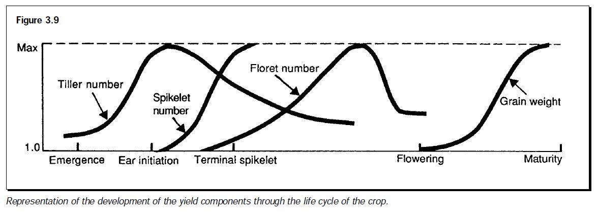
Tiller number peaks and then self-thins; floret number peaks and is then heavily aborted around flowering; grain weight accumulates only after flowering. The crop is continuously revising its own yield target as resources allow.
Source: DPIRD/GRDC Wheat Book: Principles and Practice, ch. 3
Pause
Break — 10 minutes
When we come back: the Zadoks scale, and why every decision in a cereal crop is timed by a stage rather than a date.
Part 3
Development and the Zadoks Scale
Germination to ripening in ten principal stages — and the field skill of reading them off a variable paddock.
What Actually Drives Development
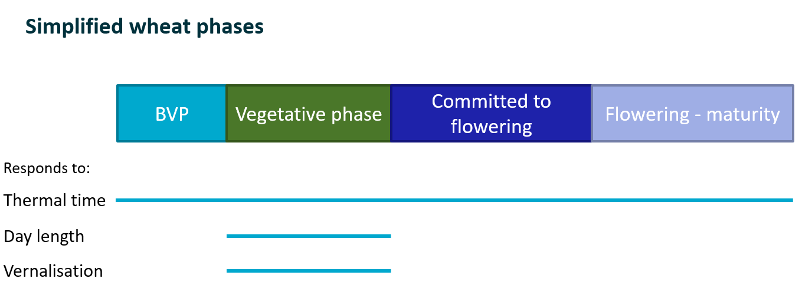
Four things, together, fix the number of days between germination and flowering:
Thermal time — accumulated temperature. The engine; always running.
Vernalisation (Vrn) — a requirement for a period of cold before the plant will commit to flowering.
Photoperiod (Ppd) — a long-day response; the plant waits for the days to lengthen.
Earliness per se — the inherent varietal differences left over once Vrn and Ppd are accounted for.
Genotype enters through named genes — VRN1, PPD1 — whose allele combinations are what make one variety quick and another slow.
The WA case. Varieties such as Mace and Scepter are quick spring types: little vernalisation requirement, low photoperiod sensitivity. Their development is driven almost entirely by thermal time. Winter wheats and long-spring types will not commit to flowering until they have had cold, long days, or both.
Thermal Time: How the Crop Keeps Time
Every phase of development requires a minimum accumulation of temperature before it can complete and the plant can move on.
In effect the plant senses temperature each day and adds it to a running total. That total is thermal time, or the heat sum, measured in degree-days (°Cd).
Each day contributes the mean temperature less a base temperature — about 5 °C for wheat, below which development effectively stops.
35 / 15The day's maximum and minimum, in °C.
25 °CMean = (max + min) ÷ 2 = (35 + 15) ÷ 2.
20 °CdLess the 5 °C base. That day's contribution to the heat sum.
So a warm week advances the crop further than a cool week of the same length. Two crops sown on the same date in different seasons reach Z30 on different dates — which is precisely why every chemical label is written in growth stages and never in weeks after sowing.
Watch First: Staging a Crop in the Field
Identifying cereal crop growth stages: Zadoks Cereal Growth Stage Key — see the stages identified and scored before we take the scale apart.
Grains Research and Development Corporation (GRDC)
The Zadoks Scale: a Common Language
How the code works
Two digits. The first is the principal growth stage; the second subdivides it.
Z13 = three leaves unfolded. Z24 = main stem plus four tillers. Z30 = start of stem elongation. Z39 = flag leaf ligule just visible. Z65 = anthesis half way.
Field-observable. Every definition is something you can see or feel on a plant you have pulled — no laboratory required.
Conventions matter — and there are four of them that catch people out. Two slides on, we do them properly.
Why it matters
Nearly every agronomic decision is specified by stage, not by date — because the crop's physiological readiness, not the calendar, determines the response.
It is the label language: chemical registrations are written in growth stages.
It is the bridge to crop models — APSIM predicts phenology in Zadoks terms, and staging is how you check the model against the paddock.
Source: DPIRD/GRDC Wheat Book: Principles and Practice, ch. 2
The Ten Principal Stages
Vegetative
Z0x Germination
Z1x Seedling growth — count leaves on the main stem
Z2x Tillering — count tillers on the main stem
Reproductive
Z3x Stem elongation — count detectable nodes
Z4x Booting
Z5x Ear emergence
Z6x Anthesis (flowering)
Grain fill & ripening
Z7x Milk development
Z8x Dough development
Z9x Ripening
Second digits are not arbitrary. In Z1x and Z2x the second digit is a literal count (Z13 = 3 leaves; Z24 = 4 tillers). In Z3x it counts detectable nodes, with Z30 and Z39 reserved for "leaf sheath erect" and "flag leaf ligule visible". In Z5x–Z9x it is a fraction or a texture description.
The Whole Sequence, and the Actions Keyed to It
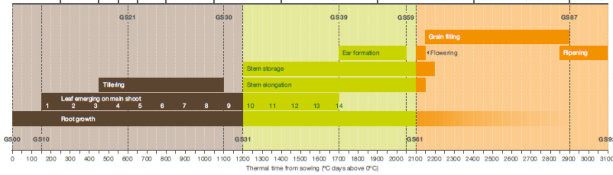
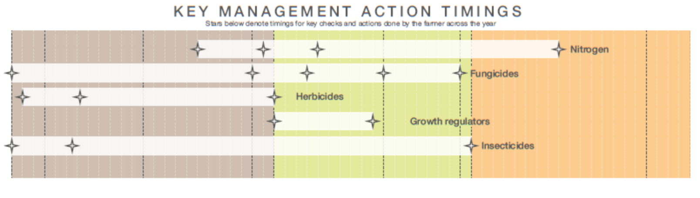
Same axis, top and bottom. Development runs on thermal time (degree-days), not calendar days — and every management action is pinned to a stage on that axis, never to a date.
Reading the Scale: Reference Definitions
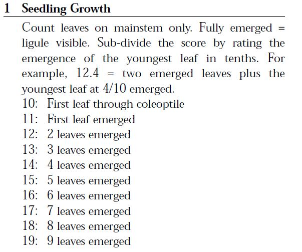
Z1x Seedling growth. Count leaves on the mainstem only; fully emerged = ligule visible.
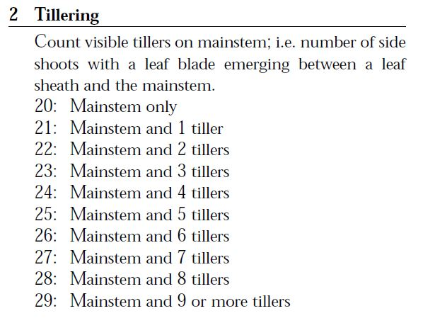
Z2x Tillering. Count side shoots with a leaf blade emerging between sheath and mainstem.
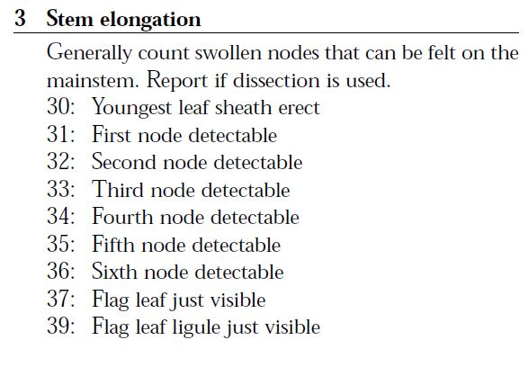
Z3x Stem elongation. Count swollen nodes you can feel on the mainstem.
Source: DPIRD/GRDC Wheat Book: Principles and Practice, ch. 2
Reading the Scale: the Rules That Catch People Out
1The scale is not chronological. A plant with three fully formed leaves has already begun to tiller — it is at Z20 — before leaves 4 to 6 exist. The two digits are a code, not a timeline.
2Once tillering starts, count tillers, not leaves. The lower leaves senesce and the leaf count stops being recoverable, so tiller number becomes the reliable observation.
3Different parts of one plant sit at different stages. Score the most advanced. A plant with 2 nodes, 3 tillers and 7 leaves is Z32, Z23 and Z17 simultaneously — you record Z32.
4From Z30 the score describes the main stem, not an average of the tillers. Before Z30 you are describing a plant; after Z30 you are describing one stem on it.
Field technique for Z30–Z33. Node position cannot be judged from the outside. Cut the stem lengthways and look: the nodes are solid, the internodes hollow, and the count of nodes that have moved up from the base gives you the second digit. This is the stage that governs both nitrogen timing and the fungicide decision, so it is worth doing properly.
Source: DPIRD/GRDC Wheat Book: Principles and Practice, ch. 2
Germination and Emergence: the Sowing-Depth Trade-off
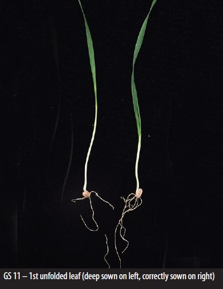
Germination and emergence are driven by seedbed moisture and temperature; this phase sets the plants per m² component.
Too deep and the coleoptile — short in modern semi-dwarf varieties — cannot reach the surface. The seedling spends reserves extending the sub-crown internode and arrives weakened, as on the left.
Too shallow and the seed sits in a seedbed that dries out before the radicle is established.
Deep sowing also delays emergence, costing thermal time from an already short season.
This is why seeding-bar accuracy and press-wheel setup matter as much as the seed rate.
Source: DPIRD/GRDC Wheat Book: Principles and Practice, ch. 3
Tillering: the First Great Compensation Mechanism
From about the three-leaf stage the plant produces tillers from the crown — each one a potential head.
Tiller number responds strongly to conditions: moisture, nitrogen, light (low density) and warmth promote tillering; stress suppresses it.
The consequence is a buffer: a thin or stressed crop tillers harder to fill the canopy; a thick or vigorous crop makes fewer tillers per plant. Head number is stabilised across a wide range of plant densities.
Not all tillers survive. Late tillers are aborted around stem elongation if resources tighten — a self-thinning that matches head number to the season on offer.
Agronomically: early nitrogen and early weed control protect tillering and canopy establishment.
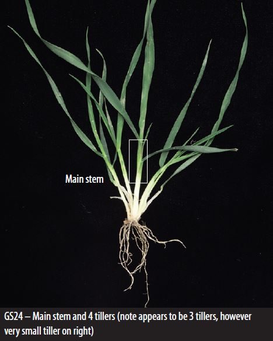
Source: DPIRD/GRDC Wheat Book: Principles and Practice, ch. 3
Counting Leaves, Counting Tillers
3 leaf→5 leaf→6–7 leaf→jointing
The correspondence an agronomist works from in the paddock. Leaf counts are on the main stem.
Leaves on the main stem
Where tillering has got to
Zadoks
3 leaf
Tillering has not yet begun
Z13
5 leaf
Coincides with early tillering
Z15 / Z21–22
6–7 leaf
Mid to fully tillered
Z16–17 / Z24–25
Jointing — first node detectable
Tillering complete; the reproductive phase has begun
Z30 / Z31
Why this map earns its keep. Labels are written in both languages. In WA, 2,4-D amine goes on from the 5-leaf stage up to jointing (Z15–Z33) — but after the 6-leaf stage (Z16) for Cranbrook, Jacup, Aroona and Spear wheat and Mortlock oats, to avoid damage. Sprayed too early, the flag leaf emerges fused, like an onion leaf, and susceptible plants twist and distort.
Floral Initiation: the Decision You Cannot See
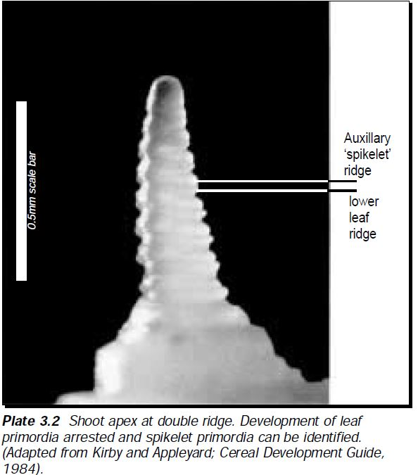
Somewhere around Z29/Z30, just before stem elongation, the shoot apex stops producing leaves and starts producing spikelets.
The marker is the double ridge — the paired ridges visible on the apex in the plate. Note the scale: it is about half a millimetre across.
It happens at ground level, inside the crown. Nothing on the outside of the plant announces it. It is found only by dissection under magnification.
And it is where spikelet number per head is set — the second term of the yield chain — weeks before there is a head to look at.
So the crop commits to a head size before it commits to a stem. Stress in the run-up to Z30 costs spikelets, and no later kindness recovers them: the compensation available afterwards is grains per spikelet and grain weight, not spikelets. Equally, nitrogen and water in this window are buying potential grain sites.
Source: DPIRD/GRDC Wheat Book: Principles and Practice, ch. 3
Stem Elongation: the Growing Point Comes Up
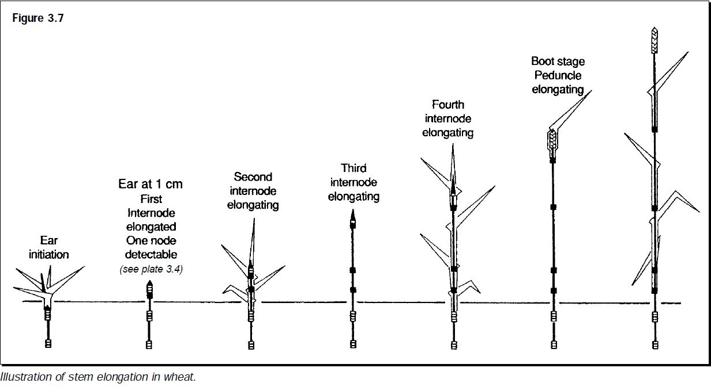
From Z30 the growing point, previously protected at ground level, rises up the stem. It is now exposed to frost and to several herbicide chemistries — which is why Z30/Z31 is a hard cut-off on many labels.
Source: DPIRD/GRDC Wheat Book: Principles and Practice, ch. 3
Staging Through Stem Elongation in the Field
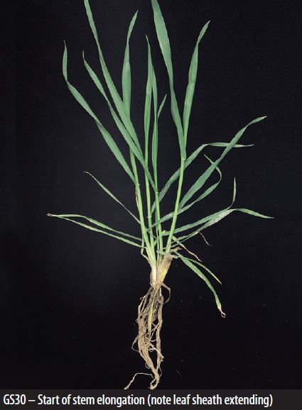
Z30 — start of stem elongation; leaf sheath extending, no node yet detectable.
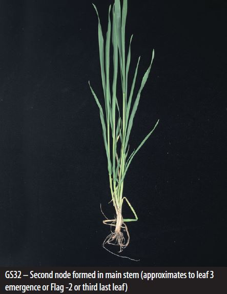
Z32 — second node detectable; approximately flag−2, the third-last leaf.
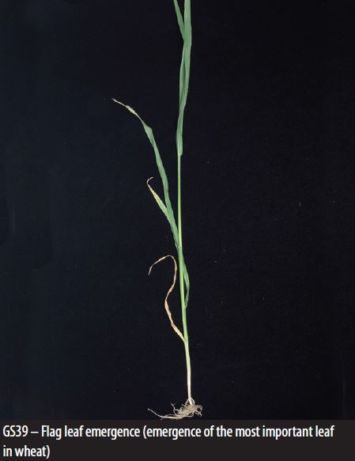
Z39 — flag leaf ligule just visible. The most important leaf in wheat is now fully exposed.
Source: DPIRD/GRDC Wheat Book: Principles and Practice, ch. 2
Booting, Ear Emergence and Flowering
Booting (Z41–49): the head swells inside the flag-leaf sheath. Scored on the sheath — extending, swollen, splitting, first awns visible.
Ear emergence (Z51–59): scored as the fraction of the ear out of the boot.
Anthesis (Z61–69): scored on visible anthers — Z61 first anthers mid-ear, Z65 half way, Z69 complete.
This is the yield-defining event. Florets are pollinated and grain number is finally set.
The losses here are largely irreversible, because the most important yield component is fixed and there is nothing left to compensate with except grain size.
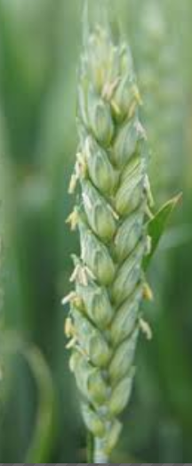
Grain Filling: the Flag Leaf Does the Work
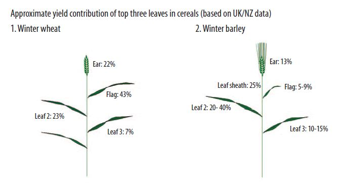
After flowering the grain accumulates starch and protein through milk (Z7x) and dough (Z8x) to maturity (Z9x).
Two sources: current photosynthesis from the flag leaf and upper canopy, plus remobilised stem reserves laid down before flowering.
In wheat the flag leaf supplies about 43% of grain-fill carbohydrate — which is what makes a flag-leaf fungicide such a high-value decision.
In barley the picture differs: the flag leaf contributes only 5–9%, and the crop leans on leaf 2 (20–40%) and the leaf sheaths. Protect a different layer.
Grain size is set by the balance of assimilate supply against the duration of fill.
Figure based on UK/NZ winter cereal data
Grain Fill in WA: Filling Into a Terminal Drought
In a Mediterranean environment, grain fill almost always runs into rising heat and a drying profile. The fill period is truncated.
Grain is therefore frequently smaller than its genetic potential — the pinched, screened grain of a dry finish.
This costs both yield and quality: lower grain weight, lower test weight, higher screenings.
A kind finish — a September or October rain — can lift grain size and test weight markedly. Growers call it a "soft finish"; it is the single biggest determinant of plumpness.
Maturity (Z9x) is reached when grain dries to harvestable moisture. Harvest promptly: grain left standing is exposed to weather damage and sprouting.
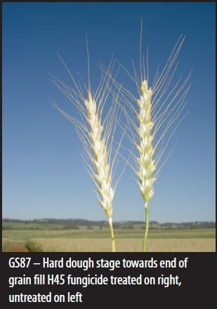
Why Growth Stage Governs Management
Herbicides. Safe and effective only inside a stage window. 2,4-D amine: after ~Z15, before jointing — outside it you get head distortion and "onion leafing".
Nitrogen. Topdressed from tillering through stem elongation, matched to the stage at which the crop can still convert N into heads and grains — and to the seasonal outlook.
Fungicides. Timed to protect a specific leaf layer at a defined stage — flag leaf in wheat, leaf 2 in barley.
Plant growth regulators. Applied at stem elongation to manage lodging.
Frost and heat risk. Assessed against flowering stage, and locked in by variety and sowing date months earlier.
The Same Stress at Different Stages Costs Different Amounts
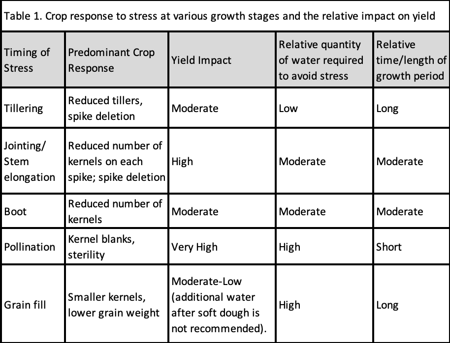
Stress at pollination costs the most (kernel blanks, sterility — very high yield impact) and is the shortest window. Stress at tillering is moderate and the crop has a long time to recover.
Part 4
How Yield Is Actually Formed — and Lost
G × E × M, the compensation machinery, and water-use efficiency as the scoreboard that tells you whether any of it worked.
Genotype × Environment × Management
Genotype (G)
Phenology — maturity, photoperiod and vernalisation response
The framework's whole point is the ×. The best variety depends on the environment (a quick variety for a late break, a slow one for early sowing). The best management depends on the variety and the season (a high-potential variety in a good season justifies high nitrogen; the same money is wasted on a drought).
How Much Does Each Term Actually Contribute?
Percentage of yield variance attributed to Genotype, Management, Environment and their interactions, in WA experiments containing multiple environments and both G and M treatments.
Study
G (%)
M (%)
E (%)
Interactions (%)
Anderson et al. (2005)
3
2
26
60
Sharma et al. (2008)
–
10
70
7
Hughes (pers. comm., 2010)
2
6
89
–
Anderson et al. (2010)
2
4
78
15
Abrecht et al. (2008)
–
36
42
17
Koj
–
56
16
22
Management alone accounts for anywhere from 2% to 56% of yield variability depending on the system and the seasons sampled — and interactions are often larger than any main effect.
How Cereals Compensate for Stress
1Thinned at establishment? The crop tillers harder and restores head number. Plants per m² is the most compensable component of all.
2Stressed during tillering? If conditions ease by flowering, the surviving heads can still set an adequate number of grains each.
3Short of grain number? A kind finish lets the crop put more weight into each grain it did set.
4The mechanism: because the components are set sequentially, a component reduced early can be partly offset by components set later — provided resources return. It is the same source–sink logic a crop model represents as stress factors.
This is why early stress is rarely fatal to a cereal, and why cereals recover from setbacks that would ruin a canola or pulse crop. It is the physiological basis of the risk argument in Part 1.
Where Compensation Runs Out
Compensation has hard limits, and both of them matter enormously in WA:
Losses at flowering are irreversible. Frost-sterilised florets and heat-damaged pollen destroy grain number — the largest component — at the one moment when only grain size remains to compensate with. There is not enough room left in the equation.
Terminal drought removes the later components' capacity to compensate. Compensation requires resources to return. If the profile is empty and the finish is hot, the crop cannot put extra weight into grain even though it "should".
So the timing of stress relative to development, not just its severity, determines whether the crop recovers.
And in a Mediterranean season these two limits coincide: flowering and grain fill both sit in the drying, warming end of the season.
Water-Use Efficiency: the Scoreboard
French–Schultz: water-limited potential yield rises with growing-season water use above an evaporation threshold of roughly 110 mm, at a slope representing transpiration efficiency.
Actual WA performance often falls well short — measured slopes of 4.9 kg/ha/mm at Morawa and 7.7 at Merredin. Some operations achieve 60–80% of potential; others reach 30%.
The gap is the diagnostic: a crop near the line was well managed for that season; a crop well below it has a correctable constraint.
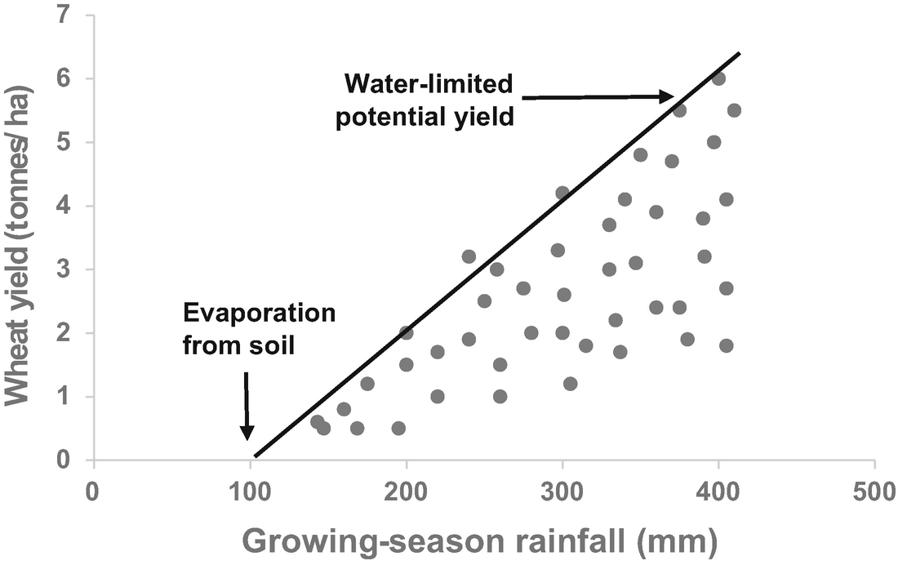
The boundary is the water-limited potential; the vertical distance below it is the yield gap. Note the intercept — the first ~100 mm buys no grain at all.
Managing the Crop Across the Season
1Pre-sowing & sowing. Choose variety and sowing date so flowering lands in the safe window. Set target density. Place seed and starter fertiliser accurately. Pre-emergent weed control.
2Emergence – tillering (Z1x–Z2x). Protect establishment and tillering: timely post-emergent weed control, early nitrogen matched to the emerging outlook and stored moisture.
3Stem elongation (Z30–Z39). Finish stage-critical herbicides before the growing point rises. Main nitrogen dressing to build grains-per-head in a promising season. Manage lodging risk.
4Flowering (Z6x). The crop is committed. Protect the yield-forming canopy with fungicide if disease threatens. Frost and heat exposure are now fixed by decisions made at sowing.
5Grain fill – harvest (Z7x–Z9x). Monitor late disease and insects — aphids during grain fill are a real threat. Harvest promptly at maturity to preserve quality.
Part 5
Grain Quality and What It Is Worth
A grower does not sell tonnes; they sell tonnes of a specified grade. Quality is often the difference between a good year and an average one.
Why Grain Quality Determines Price
Grain is bought against strict published specifications, not by appearance or goodwill:
Grain meeting a higher-value classification earns a substantial premium; grain failing a specification is downgraded — sometimes from milling wheat straight to feed — with a large price penalty.
Standards are public and administered through Grain Trade Australia and the receival networks (CBH in WA, GrainCorp, Viterra).
Grade is assessed at the weighbridge, on the day, on a sample. The decision is fast, mechanical and final.
Because quality is shaped by variety, nutrition and the season, and can be won or lost in the final weeks, managing for quality runs through variety choice, nitrogen strategy and harvest timing — not just the last fortnight.
What Actually Gets Measured
Chemical & functional
Protein content — central for wheat; determines suitability for bread, noodles or feed. Directly priced.
Falling number — sprouting damage from untimely rain. Low values mean high alpha-amylase and degraded dough; critical for milling and noodle wheats.
Moisture — must be below threshold (max 12.5%) for safe storage.
Germination and variety purity — malting barley only, and non-negotiable.
Physical
Test weight (hectolitre weight, kg/hL) — soundness and packing density.
Screenings — the fraction passing a slotted sieve. The direct measure of a pinched, drought-affected finish.
Grain colour / brightness — weather staining; a real issue near the coast.
Hardness, and for barley skinning (husk loss, which causes uneven malting).
Falling number, explained: starch heated in water makes a thick paste, so the plunger takes many seconds to fall. Sprouted grain has broken that starch down to sugars, the paste is watery, and the plunger drops quickly. A low falling number literally means the starch has already been digested.
Australian Wheat Classification
Indicative Australian wheat classes and protein specifications. Prices shown are illustrative of a recent season only — the relativities are the durable lesson, not the absolute values.
Class
Protein spec
Indicative price
Typical end use
Australian Premium Hard (APH)
min 13%
premium
High-volume European breads, ramen noodles
Australian Hard (AH)
min 11.5–14%
~$370/t
European pan and Middle-Eastern flat breads, steamed products
Australian Premium White (APW)
min 10–10.5%
~$365/t
Noodles, some continental flat breads
Australian Standard White (ASW)
no minimum
~$340/t
Straight milling or blending; European breads and rolls
Australian Noodle Wheat (ANW / APWN)
min 9.5%, max 11.5%
premium, WA specialty
Japanese udon; white salted and instant noodles
Australian Soft (ASFT)
max 9.5–10.5%
—
Biscuits, cakes
Australian Durum (DR / ADR)
min 11.5–13%
—
Pasta, couscous, flat breads
Feed wheat
no limits
large discount
Stockfeed
What the classes are actually sorting on.Hard wheats have a vitreous, glassy endosperm and mill to a coarse, strong flour — bread. Soft wheats have a softer, opaque, less compact endosperm — biscuits and cakes. Bread wheat (Triticum aestivum) runs about 9–12% protein; durum (T. turgidum ssp. durum), a different species used for pasta and couscous, runs 13–14% and is denser and lower in gluten quality for leavened bread.
Protein and the Dilution Effect
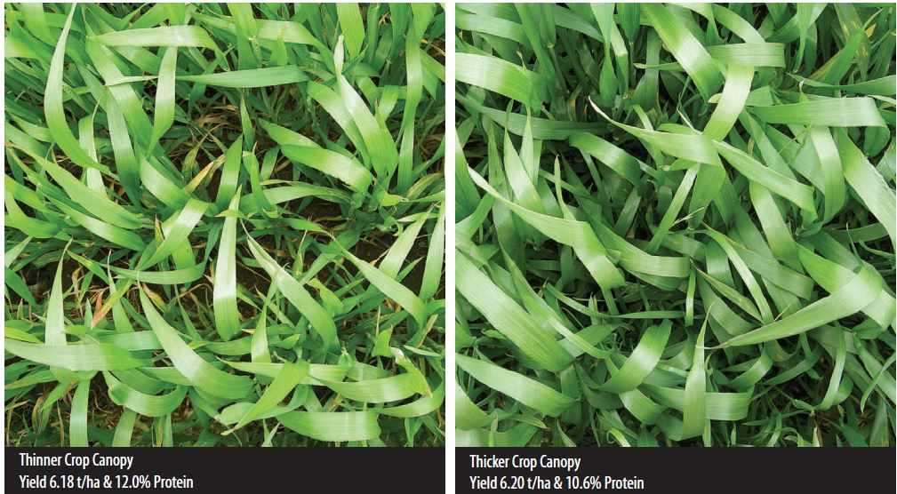
Protein concentration is a ratio: nitrogen accumulated in the grain, divided by the mass of grain produced.
So a big yield can dilute protein below the milling threshold even when total nitrogen uptake is unchanged. Moisture during grain fill drives starch accumulation, which is the denominator.
The photographs show it directly: essentially identical yield, 1.4 percentage points of protein apart — the thicker canopy diluted the same nitrogen into the same tonnage of grain differently.
The agronomist's problem: hit a yield target and a protein target simultaneously, under a season you cannot see yet.
The Nitrogen Economy Behind the Protein
Cereal N uptake has two phases: accumulation that drives growth and yield potential, then remobilisation to the grain that sets protein.
Phased across the season: ~30% before first node, 40% first node → flag leaf, 20% flag leaf → flowering, 10% after.
By flowering, 80–90% of crop N has accumulated; peak demand is at stem elongation. At maturity ~75% of shoot N has been remobilised into the grain (60–80%).
Under high N rates the proportion remobilised falls; late uptake during grain fill keeps leaves green, favours starch, and can lower protein.
The tactic: N at flag leaf emergence is too late to build yield but can still lift protein. APSIM estimates the rate that lands protein in a target band, not just maximum tonnes.
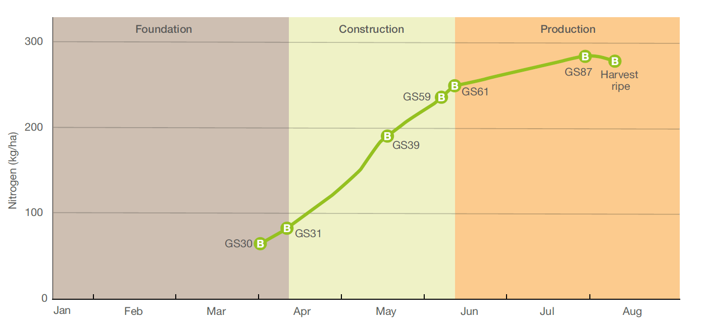
N uptake against growth stage: most of the crop's nitrogen is taken up in the construction phase, Z30–Z61. (Northern-hemisphere calendar; read the growth stages, not the months.)
Barley: the Malt-versus-Feed Decision
Malt (Malt 1 / Malt 2)
Accredited varieties only — 95% varietal purity.
Protein min 9–9.5%, max ~12.5–12.8%.
Screenings (2.5 mm) Malt 1 ≤ 20%, Malt 2 ≤ 35%; premium malt grades target <7% through 2.2 mm.
Test weight ≥ 64 kg/hL. Moisture ≤ 12.5%.
Must germinate uniformly and vigorously — sprouting or weathering disqualifies.
Premium price.
Feed
Any variety.
No protein limits.
No screenings limit.
Test weight ≥ 56 kg/hL. Moisture ≤ 12.5%.
Lower price — but a genuine, reliable floor.
Whether to grow for malt depends on four things: the premium on offer; the relative yield of malting versus feed varieties; the agronomic and disease constraints of the malting varieties; and the likelihood that the grain will actually make the grade.
The Malting Protein Window: Aim at a Band, Not a Ceiling
<9.5%Too low. Weak yeast fermentation, reduced beer head duration and stability, poor clinical performance in the brewery.
9.5–12.5%The window. The target for accredited malting barley — and the reason barley nitrogen management is fundamentally different from wheat's.
>12.5%Too high. Less alcohol per tonne, longer brewery filtration times, beer haze risk, shorter shelf life.
The trap that catches WA growers: a legume-rich rotation raises background soil nitrogen. In a dry, low-yielding season there is not enough grain to dilute it, and protein overshoots 12.5% — losing the malting premium because the rotation was good. Hence the standard advice: put barley after a non-legume (canola or wheat) when chasing malt.
Screenings: the Signature of a Hard Finish
Screenings measure grain plumpness — the fraction passing a 2.0–2.2 mm sieve. Target <10%; <7% for Malt 1.
Plumpness sets how much grain is maltable and how evenly it takes up water. Going 10% → 20% screenings costs about 3% less maltable grain.
Driven primarily by moisture stress during grain fill — the "soft finish" is the biggest lever, and it is the season's to give. Also disease (powdery mildew, net blotch, scald), frost at milk–soft dough (up to 70%), and early ryegrass competition.
The N × water interaction: nitrogen is the gas pedal, water is the fuel tank. N without spring moisture builds a canopy that cannot be filled — and increases screenings.
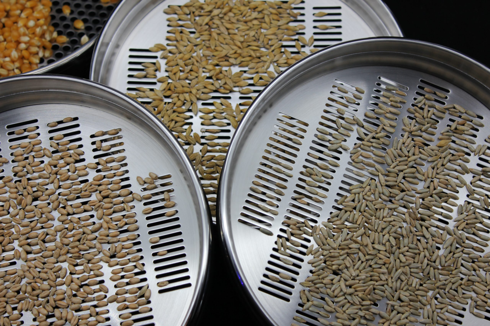
Grain Brightness: the One You Cannot Manage Your Way Out Of
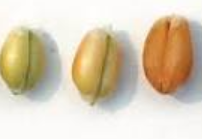
Yellowing — discolouration from light showers or high afternoon humidity. No fungi involved. Measured as brightness; target >59 L.
Greying — discolouration from heavy showers, associated with moulds and fungi. Target <5% mould-affected grains per 400.
Little direct effect on malting, but the grain is less suited to the pale-beer market, and mould can induce dormancy and lengthen storage.
Driven by variety, sowing date, 3 pm relative humidity, and rain during maturity and harvest.
Being near the coast is a structural disadvantage. Best agronomy delivers only minor improvement — the real solution is a brighter variety.
Growing Malting Barley: the Practice Checklist
1Rotation. Follow a non-legume — canola or wheat. A legume phase leaves background nitrogen that overshoots the protein ceiling in a dry year.
2Soil type. Paddocks that hold moisture into spring. The most critical site decision for malting barley: plumpness is made or lost in the finish.
3Time of sowing. As early as the variety safely allows — it lengthens grain fill and moves it off the hot end of the season.
4Nitrogen. Match rate to the yield and the protein target. Site and rate are primary; variety and split timing secondary.
5Seeding rate. Target 120–150 plants/m². Only really a lever with late sowing.
6Disease. Seed dressing, then monitor foliar disease — net type and spot type net blotch, scald, powdery mildew. The effect on screenings is often larger and more reliable than the effect on yield.
7Aphids. Control feeding during grain fill; that is the critical window.
8Weeds. Take them out early, within an integrated weed management program.
Choose the variety, then choose the management — accredited malting varieties in WA include Baudin, Buloke, Bass, Flinders, Maximus CL and Spartacus, and the program is built around the one you picked. APSIM can estimate the N rate that lands protein in the 10–11% band.
How Agronomy, Soils and Climate Shape Yield and Quality
Climate sets the envelope
Growing-season rainfall and its reliability cap yield through water supply.
Frost at flowering and heat at fill impose hard penalties on grain number and size.
The terminal drought that ends most WA seasons is the dominant influence on plumpness and screenings.
Soils modulate it
Water-holding capacity determines how much rainfall is stored for the dry finish.
Subsoil constraints — acidity, compaction, salinity — restrict root access to that stored water.
Nutrient status governs canopy function and grain protein.
Agronomy is the lever
Variety and sowing date to land flowering in the safe window.
Nutrition to build yield and hit a protein target.
Weed, disease and pest control to protect the canopy and the water it uses.
Timely harvest to preserve quality.
Bringing it together
Development is the clockEvery input is timed by growth stage, not date, because the crop's readiness — not the calendar — determines the response. Learn to stage a paddock and you can time anything.
Compensation is the safety netSequentially-set yield components let cereals absorb early stress. That machinery is the physiological reason cereals are lower-risk than break crops — and it fails exactly at flowering and in a terminal drought.
Quality is the price tagYield and quality are the joint outcome of a genotype expressing itself through a season under a grower's management. Skilled agronomy converts scarce water into the greatest value of grain that meets a specification.
Next lecture → L07 Agronomy of Canola — the break crop that does not compensate